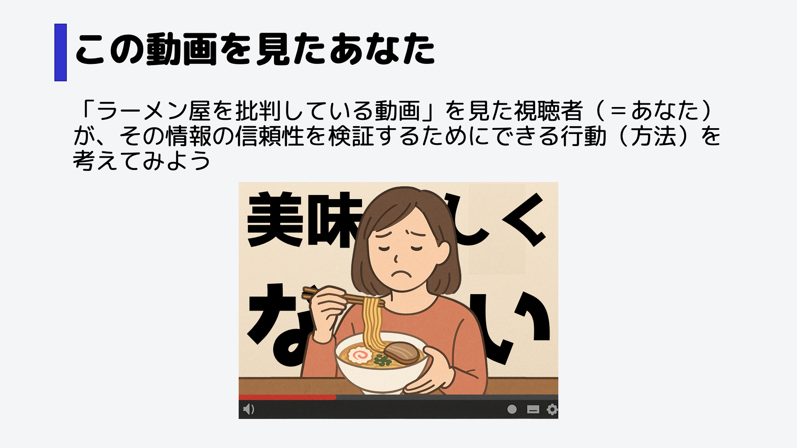
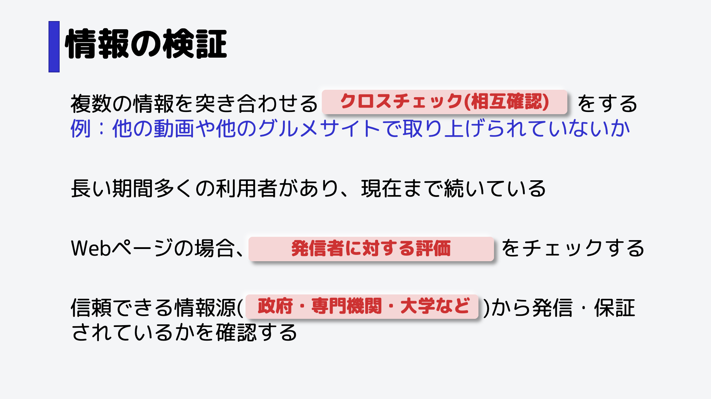

情報の検証

この動画を見た時、本当にラーメン屋がおいしくないのかを確かめる方法を考えてみよう。

直接食べに行くという方法もありますが、労力がかかります。
情報の検証には様々あります。情報はすぐに鵜呑みにするのではなく、「本当に正しいか？」と常に思った方がいいです。

この動画を見た時、本当にラーメン屋がおいしくないのかを確かめる方法を考えてみよう。

直接食べに行くという方法もありますが、労力がかかります。
情報の検証には様々あります。情報はすぐに鵜呑みにするのではなく、「本当に正しいか？」と常に思った方がいいです。